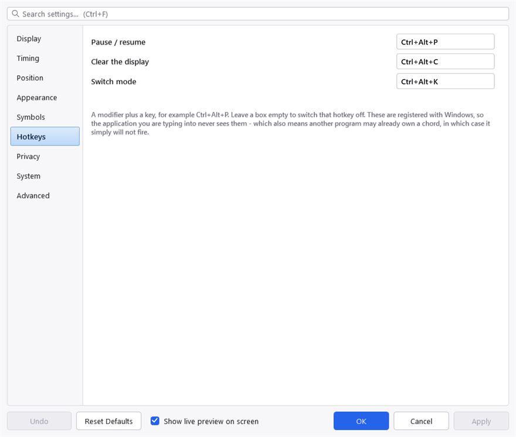
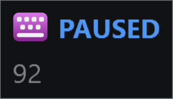

Hotkeys
Three, on the Hotkeys tab. All three can be changed, and any of them can be switched off by clearing the box.

The Hotkeys tab. A chord another program has already claimed cannot be registered, and the warning line under these boxes is the only place that is reported.
| Default | What it does |
|---|---|
Ctrl+Alt+P | Pause and resume recording |
Ctrl+Alt+C | Clear what is on screen now |
Ctrl+Alt+K | Switch between keystrokes and typing |
Pause
Pausing stops recording and clears the display at once. Nothing is captured while paused — not held, not buffered, not shown later.

Paused. The marker is the whole panel — there is nothing behind it being held back, because nothing is being captured. The icon is KeyPressOSD's own here, not the icon of whatever you were typing into: paused, the panel is telling you about itself, and that other icon would only go stale as you switched window.
The tray icon turns grey while paused, and the tray menu's first command reads Resume Recording in bold. That bold is not decoration: the menu is opened by right-clicking the tray icon, so opening it covers up the icon that was telling you the state.
Pause is the setting to reach for before typing a password, and it is faster than editing the exclusion list. For anything you do regularly, the exclusion list is better — see Privacy.
Writing a hotkey
A modifier plus a key: Ctrl+Alt+P, Ctrl+Shift+F9, Win+Alt+K. The modifier names are Ctrl, Alt, Shift and Win, joined with +.
At least one modifier is required. A bare key would be registered globally and would stop working everywhere else — a hotkey of S would take the letter away from every program on the machine.
When a hotkey does not work
These are registered with Windows, which means two things.
The good one: Windows delivers the chord to KeyPressOSD and withholds it from whatever you were typing into, so the hotkey cannot leak into your document.
The other one: another program may already own the chord, in which case the registration simply fails and the hotkey does nothing. Nothing on screen will tell you which program took it. If a hotkey does not respond, the quickest test is to set it to something obscure — Ctrl+Alt+F12 — and see whether that works.
Ctrl+Alt with a letter is the range Windows itself leaves alone, which is why the defaults live there. Chords using Win are riskier: Windows claims a great many of them and takes them without asking.
The Hotkeys tab reports a warning line when a registration fails, so a chord that could not be claimed is visible rather than silently dead.
Project on SourceForge ·
Report a problem · MIT licence ·
This manual is generated from docs/manual.